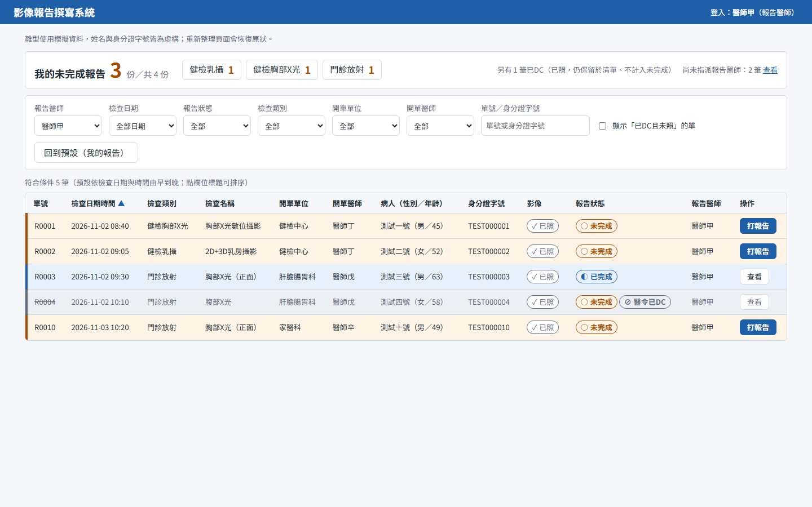
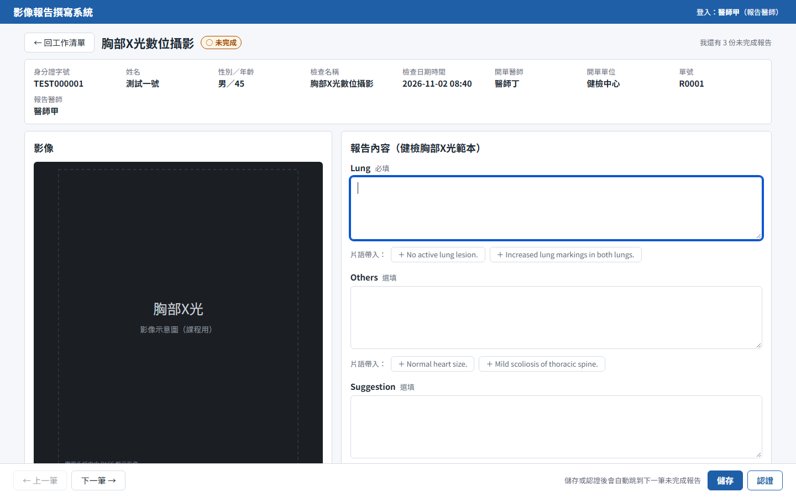
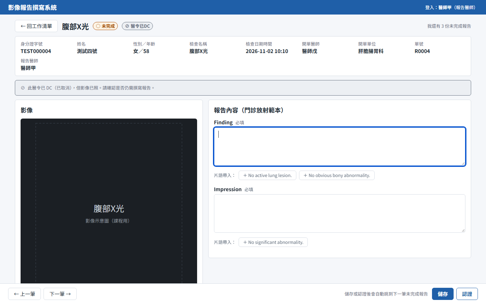
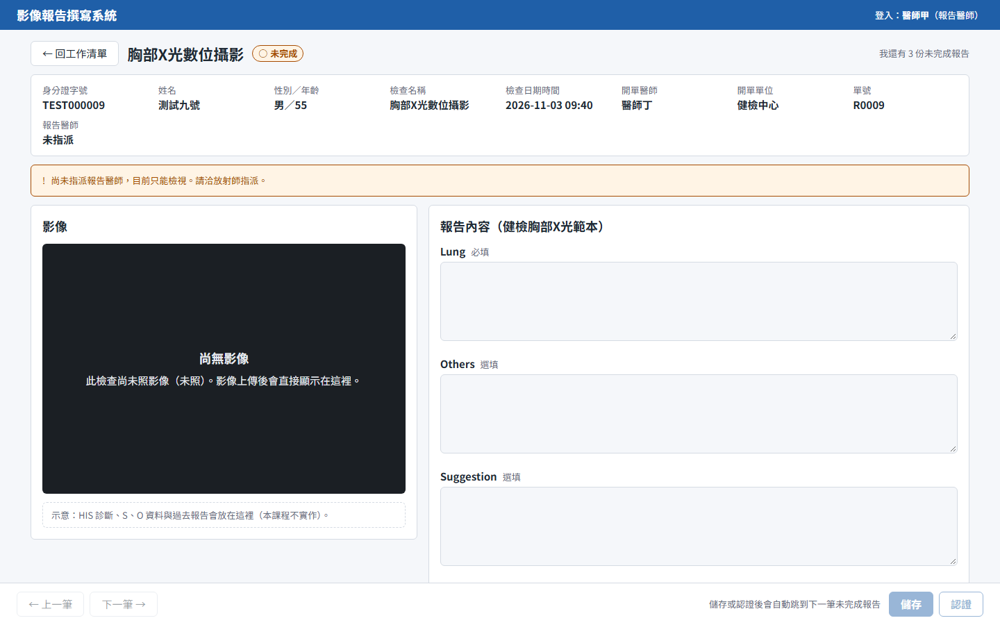
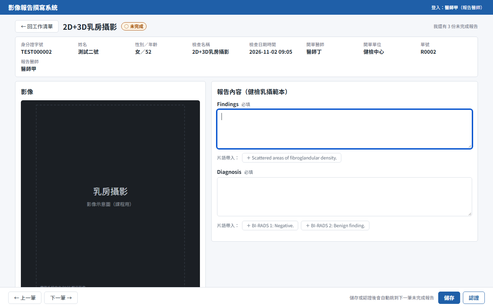

UI/UX 課程案例｜第一週 Demo
醫師工作清單 × 打報告畫面 第一版雛型
jimmy0117 ・ 2026-11-04
設計目標
「醫師從工作清單開始，連續完成多份報告。」
— 案例資料・設計範圍
工作清單用模擬資料，看得出未完成數量與報告狀態
進入打報告畫面，有影像區與依檢查類別切換的範本欄位
輸入、儲存，自動跳到下一筆未完成的報告
可用性目標：測試者不需要說明，就能完成「連續完成三份報告」。
使用者研究｜報告醫師人物誌
要「上一筆／下一筆」，儲存後直接跳下一筆。
訪談一・初訪；補充 #7 #8
分項數量與總數都要有，「不要放太下面」。
訪談一・補充 #2
點進來就看到影像，不想再點「調閱影像」。
訪談一・初訪；補充 #5
擔心放射師分派錯，要能查當天該打的清單。
訪談一・補充 #4
訪談沒有提到年齡、年資等背景，人物誌不虛構；推測的特質在 README 中另外標示。
使用者研究｜任務流程與痛點
第一版直接處理 P1、P2、P3、P5、P6；P4（過去報告）列為進階軌候選。
搜尋條件直接列在清單上方
未完成總數＋各類別分項
摘要列一鍵查看未指派
與欄位並排，不需點擊
另有上一筆／下一筆
需求矛盾與設計決定
| 議題 | 不一致的說法 | 我的決定 |
|---|---|---|
| 門診放射片語 | 醫師甲初訪「不需要」→ 六週後更正「要有」 | 提供片語；採較晚的更正 |
| 已 DC 的單 | 技術員乙「不要出現」vs 放射師「已照保留、未照移除」 | 已照：保留並標示，不計入未完成 未照：預設隱藏，可勾選顯示 |
| 預設看誰的單 | 「預設登入醫師」vs「擔心分派錯，要查全部」 | 預設看自己；摘要列顯示「未指派 N 筆」捷徑 |
| 狀態標示 | 「不同底色」vs「整筆變綠＋V 記號」 | 底色＋色條＋文字＋圖示，不只靠顏色 |
Demo ①｜醫師工作清單

Demo ②｜打報告畫面

Demo ③｜資料中刻意埋的情況

R0004 已 DC 已照：上方灰色橫幅提醒確認是否仍需撰寫

R0009 未照＋未指派：顯示「尚無影像」，只能檢視，儲存停用並說明原因
Demo ④｜核心任務

Live Demo
迷你設計系統
紅綠色盲下仍分得開；橘色直覺代表「待處理」
直覺，但紅綠難分，紅色易被讀成「錯誤」
色覺最安全，但一眼辨識較慢
數值統一在 tokens.css；按鈕、表格列、狀態標籤、表單欄位的規則寫在 design-system.md。
待確認與下一步
謝謝！ github.com/jimmy0117/report-system-design